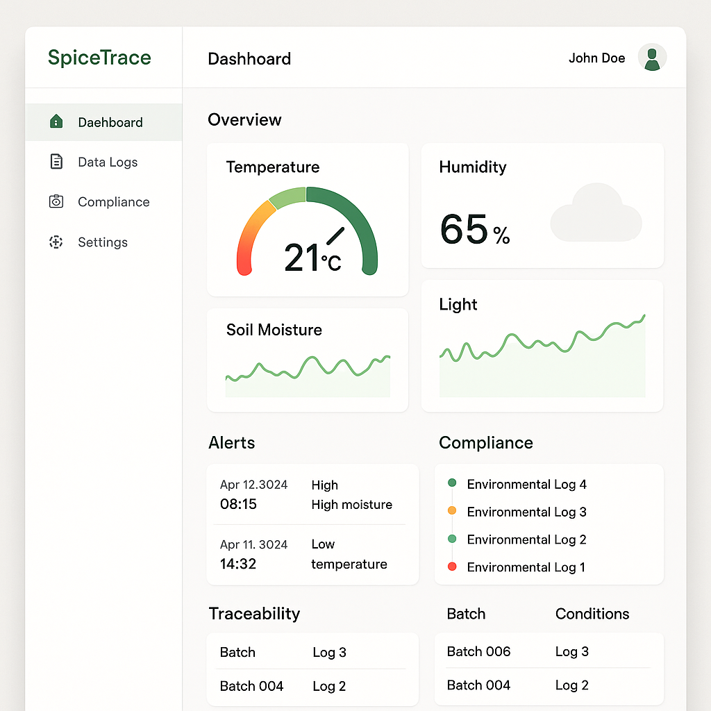

A monitoring and traceability support system for high-value spice growers.
Spice growers face difficulty maintaining environmental consistency and documenting conditions required for compliance and export markets.
SpiceTrace provides environmental monitoring, structured data logging, and traceability support to help growers maintain quality and compliance.
Environmental data such as temperature, humidity, and light are monitored and visualized in a simple dashboard for growers.

Each batch of spice can be linked to environmental records and production documentation.
We are currently speaking with spice growers and export professionals to validate this concept.